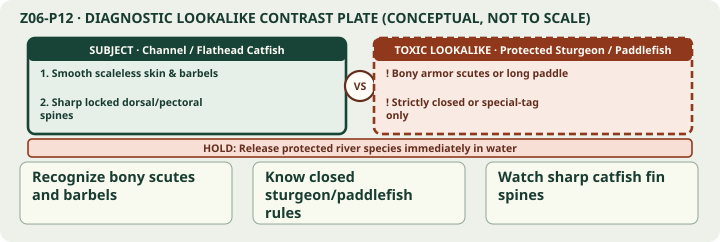

Z06-P12 · Hunting and fishing · New manuscript
Catfish, Bullheads, Sturgeon and Protected Native Fish Exclusions
Recognize protected sturgeon, paddlefish, and native rough fish so threatened species are never injured or retained unlawfully.
When it applies · Large rivers (Mississippi, St. Croix, Rainy, Minnesota) and connected lakes.
Equipment · MN DNR species identification key, heavy pliers for safe hook removal.

Actions
- Identify strictly protected species—including paddlefish (long paddle snout, closed statewide) and lake/shovelnose sturgeon (bony scutes, shark-like tail, strict seasonal/tag rules)—and release them immediately in water.[H01, H06, L04]
- Handle catfish and bullheads carefully to avoid venomous-mucus puncture wounds from locked dorsal and pectoral fin spines.[H06, M06]
- Verify river-specific catfish possession limits and MDH consumption advisories because long-lived bottom feeders accumulate higher PCB and mercury loads in some rivers.[H01, H04]
Failure recognition · Pulling a protected sturgeon out of water for prolonged photos or mishandling bullhead spines causes illegal take and infected puncture injuries.[H01, H06, M06]
Verify · Protected river species are recognized on sight and released unharmed in water without delay.[H01, H06]
Stop or change course · Stop handling if a fin-spine puncture causes worsening swelling, redness, or fever; clean thoroughly and seek medical evaluation.[M06]
Evidence and editorial notes
- H01 · Minnesota DNR · Minnesota Fishing Regulations (Current web edition)
- Section: Licensing, seasons, limits, and waterbody-specific rules · Conditions: Minnesota angling across inland, border, and designated waters
Support: Anglers must hold a valid license unless explicitly exempt and verify current season dates, possession limits, size slots, and special waterbody rules before fishing.
Limitations: Regulations change annually and differ on border waters, trout streams, and tribal/ceded territories; no emergency creates an automatic legal exemption. · Conflicting evidence: None noted.
Editorial note: Establishes Z06 fishing authority gate. · Specialist reviewer: Minnesota DNR fisheries and legal reviewer
Primary source · checked 2026-11-25 - H04 · Minnesota Dept. of Health · Fish Consumption Guidance and Waterbody Advisories (Current web edition)
- Section: Waterbody-specific fish consumption advisories (mercury, PFAS, PCBs) · Conditions: Consuming Minnesota caught freshwater fish
Support: MDH issues species-, size-, and waterbody-specific meal-frequency limits for mercury, PCBs, and PFAS, with stricter limits for pregnant/nursing people and children under 15.
Limitations: Visual fish health and water clarity cannot detect mercury, PFAS, or PCBs; check current MDH waterbody lookup before eating caught fish. · Conflicting evidence: None noted.
Editorial note: Mandatory Z06 public-health fish advisory gate. · Specialist reviewer: Public-health toxicologist and MDH reviewer
Primary source · checked 2026-11-25 - H06 · Minnesota DNR · Fishes of Minnesota Species Reference (Current web edition)
- Section: Positive fish species identification before keeping catch · Conditions: Identifying regional game, rough, and protected fish species
Support: Accurate species identification using fin counts, mouth structure, markings, and body profile is mandatory to comply with limits and protected-species rules.
Limitations: Juveniles and hybrids can resemble restricted species; release immediately when positive identification is uncertain. · Conflicting evidence: None noted.
Editorial note: Connects Z06 identification to lawful harvest. · Specialist reviewer: Fisheries biologist
Primary source · checked 2026-11-25 - L04 · Minnesota DNR · Minnesota Endangered, Threatened, and Special Concern Species (Current web edition)
- Section: State endangered, threatened, and special-concern species · Conditions: Habitats supporting state-listed mammals, birds, reptiles, and amphibians
Support: Unselective devices endanger state-listed species including raptors, mustelids, and turtles.
Limitations: Verify protected-species distribution and never disturb protected habitats or dens. · Conflicting evidence: None noted.
Editorial note: Protects state-listed nongame species. · Specialist reviewer: Conservation biologist
Primary source · checked 2026-11-25
Current assessment · A04-L04 (2026-11-25) · Open: support partial or missing (A04): Lists species and their status but no capture-rate evidence across device and habitat conditions. Use regulatory avoidance only. Limits: Specialist review PENDING (Conservation biologist); publication HOLD. All release decisions pending. - M06 · NIH / MedlinePlus · Wounds and Injuries (current web edition)
- Section: Minor Wound Cleaning, Protection, and Infection Red Flags · Conditions: Superficial cuts, scrapes, and abrasions with potable water available
Support: Rinse minor wounds thoroughly with clean potable water, cover with a clean sterile dressing, and monitor for worsening redness, warmth, swelling, pus, red streaks, or fever.
Limitations: Deep punctures, animal bites, retained foreign bodies, or heavily contaminated wounds require clinical evaluation and tetanus review. · Conflicting evidence: None; separates clean potable rinsing from harsh chemical wound scrubbing.
Editorial note: Anchors field wound hygiene and infection escalation cards. · Specialist reviewer: Wilderness medicine and wound care
Primary source · checked 2026-11-24
Source lineage · New manuscript (Z06 P17 species protection) · Classification · New manuscript.